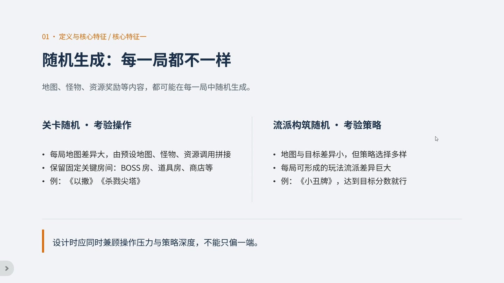

随机生成：每一局都不一样
“随机”是肉鸽最显眼的标签，也是最容易被做成偷懒借口的机制。把一屋子内容丢进随机池，让玩家每局抽到不同组合，听起来很省事——省的是内容制作的成本，代价是把设计责任转移给了概率。玩家抱怨“这局没法玩”，你没法回答“这是运气”，因为运气本来就是你的系统生成的。
本章要讲清楚的是：随机生成的价值在哪、它由哪几层结构组成、两类随机的设计重心有什么不同，以及怎么让随机既新鲜又可控。
2.1 随机到底在解决什么
先说清楚动机，否则很容易为了“看起来像肉鸽”而加随机。随机生成承担三件事：
- 内容复用：一套房间素材，靠布局与组合产生几十种体验，这是小团队能做出“几十小时内容”的真实原因。
- 重开价值：玩家每次重开面对的是新问题，需要重新判断，而不是背下一条固定路线。
- 叙事上的不确定性：紧张感来自“我不知道下一扇门后面是什么”，这是肉鸽情绪的基础。
这三件事的共同前提是玩家能从“不一样”里读出新信息。如果随机只在装饰层面变化（换个背景、换几个杂兵），玩家很快会看穿，重开就退化成重复劳动。
2.2 随机的三层结构
《以撒的结合》是理解这件事最好的样本。它的地图看起来完全随机，实际上是三层结构叠出来的：
每层地图是若干等大的正方形房间拼成的网格
房间尺寸、连接方式、边界形状固定"] --> P["第二层：参数
这一层有多少房间、多少战斗房、多少特殊房
由层数与难度决定"] P --> O["第三层：池子
石头、火堆、障碍、敌人种类从各自的池子里抽
抽到哪个由权重决定"] O --> R["最终结果：看起来完全随机的一层地图"] style T fill:#e7f3ff,stroke:#007acc,color:#14395a style P fill:#fff6e8,stroke:#e65100,color:#14395a style O fill:#f5eefb,stroke:#8e44ad,color:#14395a style R fill:#e9f7ec,stroke:#2e7d32,color:#14395a
模板保证了可玩性：房间连通、Boss 房可达、不会出现玩家被卡在墙里的情况。参数保证了节奏：第 3 层的战斗房密度和第 8 层不一样。池子保证了新鲜感：同样是战斗房，里面的怪和障碍每次不同。
很多项目的随机之所以让玩家难受，是因为只做了第三层——模板是手搓的固定关卡，参数没有随进度变化，只有怪物位置在乱跳。这种随机在玩家眼里等同于“背图 + 记怪”，两次就腻了。
| 层级 | 你控制什么 | 缺失后的症状 |
|---|---|---|
| 模板 | 空间形状、连通规则、房间尺寸 | 地图碎片化，出现无法通关的布局 |
| 参数 | 房间数量、类型配比、难度曲线 | 每一层手感一样，前中期没有起伏 |
| 池子 | 敌人、道具、障碍的具体组合 | 每局都像同一局，重开没有新信息 |
2.3 两类随机，考的是两种能力
视频里把随机分成两类，这个划分比“地图随机”这种笼统说法有用得多，因为它直接决定了玩家的失败该归因于什么。
随机的是空间、敌人配置与掉落位置。玩家每局要面对不同的地形与遭遇顺序，核心考验是走位、战斗节奏与临场资源调度。
- 典型：《以撒的结合》《杀戮尖塔》（地图节点随机）
- 决策点：走哪条路、这层要不要清完、药水留到哪一层
- 失败归因：操作失误、资源用错时机、路线判断错误
- 设计重心：可读性。玩家必须能一眼看出房间的危险程度与奖励类型，否则随机就变成惊吓
随机的是可选的牌、道具、词条。地图往往很小甚至没有，《小丑牌》只有目标分数，《幸运房东》只有一台老虎机。核心考验是取舍与组合。
- 典型：《小丑牌》《幸运房东》《杀戮尖塔》（卡牌奖励）
- 决策点：拿哪三张、删哪张、为哪套组合让路
- 失败归因：构筑方向选错、过早锁定、没有留调整余量
- 设计重心：信息展示。玩家要能算出“这套还差什么”，否则随机就变成赌博
两种随机并不互斥。视频里讲者特别强调：设计时应同时兼顾操作压力与策略深度，不能只偏一端。《以撒》以关卡随机为主，但也有眼泪特效、道具联动这类构筑空间；《杀戮尖塔》的路线是随机的，卡组构筑同样是随机的。你可以有侧重，但不能让另一端为零，否则一类玩家会立刻流失。
| 玩家类型 | 偏好 | 如果缺失 |
|---|---|---|
| 操作型 | 关卡随机、敌人配置、走位空间 | 觉得“只是在算数字”，没有手感 |
| 策略型 | 构筑随机、取舍、组合发现 | 觉得“只是手快”，没有思考 |

2.4 锚点：随机里必须留的确定
纯随机会产生死局。玩家在第 2 层连开五个房间全是精英，没有商店、没有回血，这局在开局十分钟就结束了。这不是难度，这是设计漏了保底。
锚点是随机地图里位置可能随机、但一定存在的东西。视频里举的例子很具体：
- 《以撒》：每层一个 Boss 房，前几层保证有商店与道具房，确保玩家能买到补给、能拿到一件成长道具。
- 《杀戮尖塔》：Boss 房之前必定有一个篝火，让玩家能把卡组调整到能打 Boss 的状态。
锚点的设计原则可以写成一条：任何一局，玩家都必须拥有“把当前局面救回来”的最低资源通道。具体到配置上，至少要有三类锚点：
| 锚点类型 | 作用 | 常见配置 |
|---|---|---|
| 补给锚点 | 回血、回能量、补弹药 | 每 N 层必出一次，Boss 前必出 |
| 成长锚点 | 提供至少一件能进构筑的道具 | 每层保底 1 个，稀有度按层数加权 |
| 交易锚点 | 让玩家能把多余资源换成需要的资源 | 商店每 2 层保底 1 次 |
2.5 让随机“可读”
同样是随机，有的游戏让玩家觉得“这局我运气不好，但我知道该怎么打”，有的让玩家觉得“莫名其妙就死了”。差别在信息：玩家能不能在遭遇之前，对风险做出判断。
- 房间类型前置可见：地图上标出商店、宝箱、精英，玩家才能规划路线。
- 掉落有来源：道具从哪个池子来、稀有度如何，玩家要能推断“后面还有没有机会”。
- 结果可复盘：死亡结算时展示这局的构筑与关键选择，玩家才知道下次该改什么。
2.6 实现：房间图生成与加权抽取
下面这个例子用节点图的形式生成一整层地图，思路接近《杀戮尖塔》。它分成三步：先按层数确定行数与节点数，再连接相邻行，最后按权重分配房间类型并强制插入锚点。
using System;
using System.Collections.Generic;
public enum RoomType { Combat, Elite, Shop, Treasure, Rest, Boss }
public class MapNode
{
public int Id;
public int Row;
public int Col;
public RoomType Type;
public List<int> Next = new List<int>();
}
public class GenerationConfig
{
public int Rows = 12; // 行数 = 关卡纵深
public int MinNodesPerRow = 2;
public int MaxNodesPerRow = 4;
public float EliteRate = 0.12f;
public float ShopRate = 0.06f;
public float RestRate = 0.08f;
public float TreasureRate = 0.05f;
}
public static class FloorGenerator
{
// seed 固定时结果必须完全一致：联机、回放、bug 复现都依赖这一点
public static List<MapNode> Generate(int floorIndex, int seed, GenerationConfig cfg)
{
var rng = new Random(seed * 7919 + floorIndex * 104729);
var nodes = new List<MapNode>();
var rows = new List<List<MapNode>>();
// 1) 铺节点：每行节点数随机，但第一行与最后一行必须是单节点
for (int row = 0; row < cfg.Rows; row++)
{
int count = (row == 0 || row == cfg.Rows - 1)
? 1
: rng.Next(cfg.MinNodesPerRow, cfg.MaxNodesPerRow + 1);
var line = new List<MapNode>();
for (int col = 0; col < count; col++)
{
var node = new MapNode { Id = nodes.Count, Row = row, Col = col };
nodes.Add(node);
line.Add(node);
}
rows.Add(line);
}
// 2) 连边：每个节点连向下一行的邻近位置，保证不断层
for (int row = 0; row < rows.Count - 1; row++)
{
var cur = rows[row];
var nxt = rows[row + 1];
foreach (var node in cur)
{
// 按列比例映射到下一行，避免跨度过大
float ratio = cur.Count == 1 ? 0f : (float)node.Col / (cur.Count - 1);
int target = (int)Math.Round(ratio * (nxt.Count - 1));
node.Next.Add(nxt[target].Id);
// 有一定概率额外开一条分支，形成并行路线
if (nxt.Count > 1 && rng.NextDouble() < 0.35)
{
int alt = Math.Clamp(target + (rng.Next(2) == 0 ? -1 : 1), 0, nxt.Count - 1);
if (!node.Next.Contains(nxt[alt].Id))
node.Next.Add(nxt[alt].Id);
}
}
// 反向补边：确保下一行每个节点都有入边，否则会出现孤岛
foreach (var node in nxt)
{
bool hasParent = false;
foreach (var p in cur) if (p.Next.Contains(node.Id)) { hasParent = true; break; }
if (!hasParent && cur.Count > 0)
cur[rng.Next(cur.Count)].Next.Add(node.Id);
}
}
// 3) 定类型：先放锚点，再按权重填剩余
nodes[0].Type = RoomType.Combat;
rows[0][0].Type = RoomType.Rest; // 开局休整
rows[cfg.Rows - 1][0].Type = RoomType.Boss; // 终点 Boss
rows[cfg.Rows - 2].ForEach(n => n.Type = RoomType.Rest); // Boss 前必给篝火
foreach (var node in nodes)
{
if (node.Type == RoomType.Boss || node.Row == 0) continue;
if (node.Row == cfg.Rows - 2) continue; // 已固定为 Rest
double roll = rng.NextDouble();
if (roll < cfg.TreasureRate) node.Type = RoomType.Treasure;
else if (roll < cfg.TreasureRate + cfg.ShopRate) node.Type = RoomType.Shop;
else if (roll < cfg.TreasureRate + cfg.ShopRate + cfg.RestRate) node.Type = RoomType.Rest;
else if (roll < cfg.TreasureRate + cfg.ShopRate + cfg.RestRate + cfg.EliteRate) node.Type = RoomType.Elite;
else node.Type = RoomType.Combat;
}
return nodes;
}
}
- 孤岛检查：连边之后必须反向确认每个节点都有入边，否则玩家会卡在一条不可达的分支上。这类 bug 在测试里很难复现，靠代码断言更可靠。
- 最后一行单节点：Boss 层如果允许多个入口，玩家会并行挤在同一个 Boss 房，节奏和数值都会失控。
- 种子写成公式：
seed * 7919 + floorIndex * 104729这种写法保证“同一个种子 + 同一层”永远得到同一张图，联机同步与 bug 复现都靠它。
类型分配这一步用的是等概率分段，真实项目里更常用独立的权重表，方便策划在表格里改。下面是最小可用的加权抽取器，后面第七章的掉落系统会复用它：
public static class WeightedPicker
{
/// <summary>按权重抽取一项；权重为 0 的项不会被选中</summary>
public static T Pick<T>(IReadOnlyList<(T item, float weight)> pool, Random rng)
{
float total = 0f;
for (int i = 0; i < pool.Count; i++) total += Math.Max(0f, pool[i].weight);
if (total <= 0f)
throw new InvalidOperationException("权重池为空，检查配置表");
float roll = (float)rng.NextDouble() * total;
for (int i = 0; i < pool.Count; i++)
{
roll -= Math.Max(0f, pool[i].weight);
if (roll <= 0f) return pool[i].item;
}
return pool[pool.Count - 1].item; // 浮点累加误差的兜底
}
}
2.7 本系统常见的三个坑
开局死局
玩家第一层就拿不到任何能进构筑的东西，后面全程被动。解法是强制成长锚点：前两层至少一件、且不能是纯数值垃圾。验收方法：跑 100 次模拟，统计“前两层无可用道具”的比例，压到 1% 以下。
随机池污染
随着版本更新不断往池子里塞新道具，老道具被稀释，玩家想凑的流派越来越难成型。解法是分层池：按稀有度、按流派分池，而不是一个大池子抽到底。
不可复现的随机
用 UnityEngine.Random 这类全局随机源，别处的调用会污染序列，导致同一颗种子生成的图不一样。所有生成逻辑都必须接收自己的 Random 实例。
实现练习 2-1
把上面的 FloorGenerator 改成数据驱动：行数、节点数、各类房间权重全部从 ScriptableObject 或 JSON 读取，然后用同一颗种子连续生成 20 层，检查锚点是否每层都齐。
实现练习 2-2
写一个统计脚本，用 1000 次模拟统计“前两层拿到至少一件可进构筑道具”的比例、“Boss 前一层是否必有休整点”的比例、“随机节点不可达”的比例。三个数字都应该是 100%、100%、0%。
判断练习 2-3
你的项目属于关卡随机还是构筑随机？写下它最考验玩家的三种决策，然后检查当前的随机生成是否会破坏这三种决策。如果玩家经常说“这局没法打”，答案通常在这里。
本章小结
- 随机的价值是内容复用、重开价值与不确定性，前提是玩家能从变化里读出新信息。
- 随机分三层：模板保可玩、参数保节奏、池子保新鲜，缺一层就会退化成“背图”。
- 关卡随机考操作，构筑随机考策略，两端都要留，只是侧重不同。
- 锚点是随机的保险丝：补给、成长、交易三类至少要各有一条通道。
- 所有生成逻辑都要能靠种子复现，全局随机源是复现性的头号杀手。